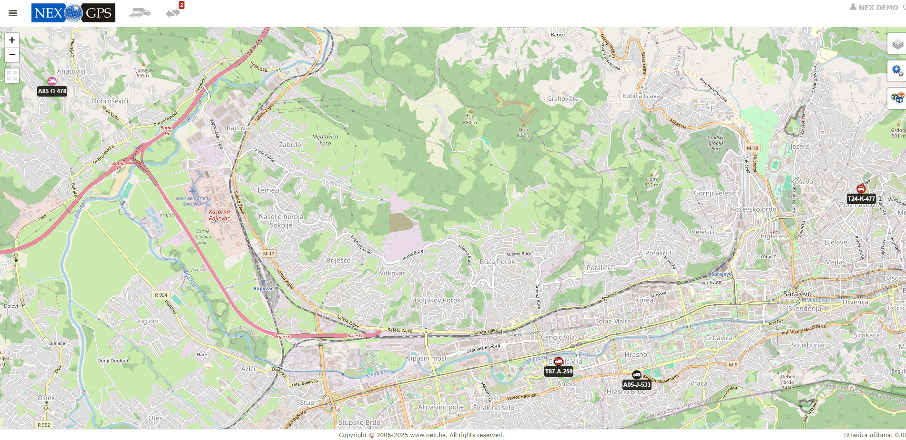

Detaljni izvjestaj
Kako bi detaljno provjerili lokacije vozila pocetak kretanja i sva zaustavljanja mozete uciniti na slijedeci način:
- Otvoriti meni sa lijeve strane
- Navigirati na ikonicu izvještaji
- Kliknuti na izvještaj Detaljni izvještaj
- Prvo sto trebate uraditi jeste odabrati vozilo za koje zelite vidjeti izvjestaj ili odabrati vozača
- Kada ste odabrali vozilo potrebno je da odabere period (datum od i datum do), najduži period koji možete odabrati jeste mjesec dana
- Kada ste odabrali vozilo i perdio potrebno je kliknuti OK i sačekati da se učita izvještaj gdje ćete moći i uz pomoć miša detaljno moci pregledati slijedeće mogučnosti:
1.Rad vozila(Vožnja, Stajanje, Odmor, Parkiranje, Rad u leru)
2.Radno vrijeme(Radno vrijeme, Van radnog vremena)
3.Ostalo(Brzina, Kilometraža, Radni sati i Utrošenost goriva)
Detaljno možete pogledati na snimku ispod
